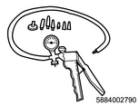

The position of the turbocharger nozzle is controlled by the ECM. The ECM utilizes a turbocharger nozzle control solenoid valve and a boost pressure sensor to control the turbocharger nozzles. When the engine is not under load, the turbocharger nozzles are in an open position, or no boost condition. When the engine is under load, the ECM commands the control solenoid valve to close the turbocharger nozzles, thus increasing the boost. The ECM varies the boost dependent upon the load requirements of the engine. The ECM uses a pulse width modulation on the control circuit to open and control the solenoid valve.
1. Diagnostic system check
Refer to "202.Description Engine 15C.Functional Inspection(4JK1) diagnostic system check-engine controls".
2. Prioritized DTC.
If DTCs P0045, P0112, P0113, P0117, P0118, P0234, P0237, P0238, P0299, P0638, P0697, P2227, P2228 or P2229 are set, go to the applicable DTC diagnosis.
3. Inspection of turbocharger control parts
Inspect for the following conditions, and repair as necessary. Go to Repair verification.
Air leakage around the boost pressure sensor or foreign material blocking the sensor hole.
Air leakage around the air intake pipe between the turbocharger and intake manifold. Damaged components and loosened clamps.
Misrouted, disconnected or kinked turbocharger nozzle control actuator vacuum hoses.
Binding of the turbine shaft which causes a decrease in the rotation speed of the turbocharger shaft.
Sticking or operation failure of the turbocharger nozzle control actuator.
Stuck intake throttle valve. Perform the Intake Throttle Solenoid Control with a scan tool.
Clogging of the air cleaner element, collapsing of the air intake pipe between the air cleaner and boost pressure sensor, or condition of restricted.
Oil in the air intake pipe that may cause a boost pressure sensor signal error. If the oil is attached to inside the piping, the intercooler, or the turbocharger, it is necessary to wipe it off.
If the turbocharger control parts are normal, go to Turbocharger control diagnosis.
4. Turbocharger control diagnosis
Put the transmission in the neutral position to apply the parking brake.
Start the engine.
Depress the accelerator pedal to W.O.T. several times while comparing the Boost Pressure display with the Desired Boost Pressure display on the scan tool.
Drive the vehicle with at least 50% of the engine load for 10 seconds while comparing the Boost Pressure display with the Desired Boost Pressure display on the scan tool.
Verify that the difference between the Boost Pressure display and the Desired Boost Pressure display is within the specified range.
Standard： 20 kPa { 3 psi }
If the reading is within the specified range, the system is normal.
If the reading is outside the specified range, go to Inspection of turbocharger nozzle control solenoid valve.
5. Inspection of turbocharger nozzle control solenoid valve operation
Turn OFF the ignition switch.
Disconnect the vacuum hose from the turbocharger nozzle control actuator diaphragm.
Connect the vacuum pump to the removed vacuum hose.

SST: 5-8840-0279-0 - vacuum pump
Start and idle the engine.
Perform the Turbocharger Solenoid Control with a scan tool.
Command the turbocharger nozzle control solenoid valve INCREASE and DECREASE while observing the vacuum pump.
Verify that the vacuum pump display shows 50 cm Hg (20 in. Hg) when an INCREASE command is executed to the maximum and the zero region when a DECREASE command is executed to the minimum.
If it operates properly, go to Repair verification.
If it does not operate properly, go to Inspection of vacuum hose.
6. Inspection of vacuum hose
Inspect for the following conditions, and repair as necessary. Go to Repair verification.
Misrouted, disconnected, kinked, or plugged turbocharger nozzle control actuator vacuum hose.
Misrouted, disconnected, kinked, or plugged solenoid valve ventilation hose.
Misrouted, disconnected, kinked, or plugged vacuum source hose.
If the vacuum hose is normal, replace the turbocharger nozzle control solenoid valve. Go to Repair verification.
Refer to "1.Engine 1F.Induction(4JK1) turbocharger control solenoid removal".
Refer to "1.Engine 1F.Induction(4JK1) turbocharger control solenoid installation".
7. Repair verification
Reconnect all of the disconnected parts and harness connectors.
If a DTC is set, clear the DTC with a scan tool.
Go to Prioritized DTC.